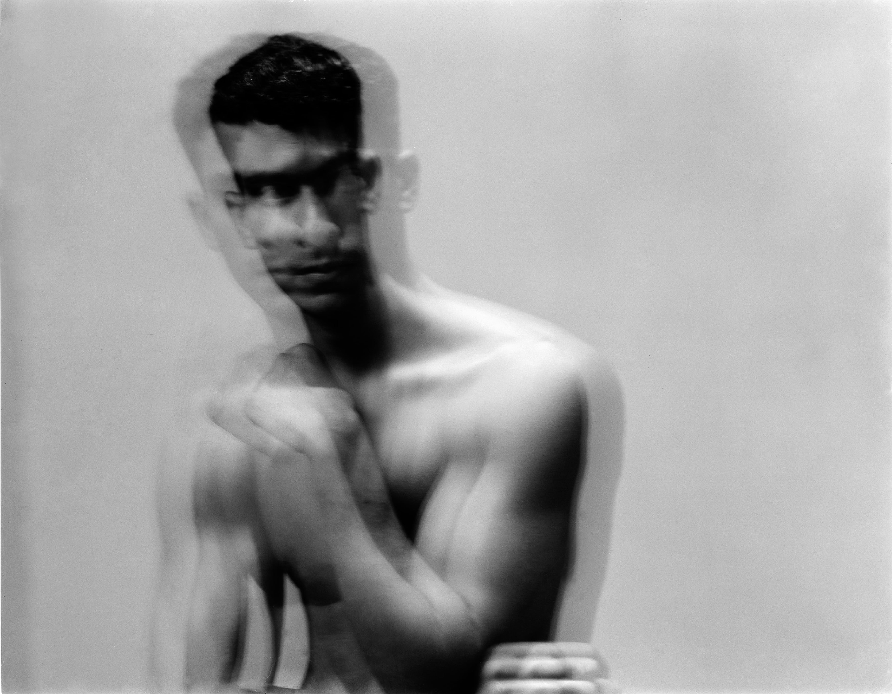
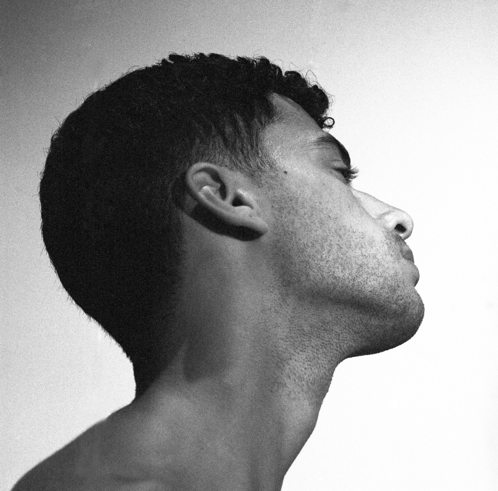
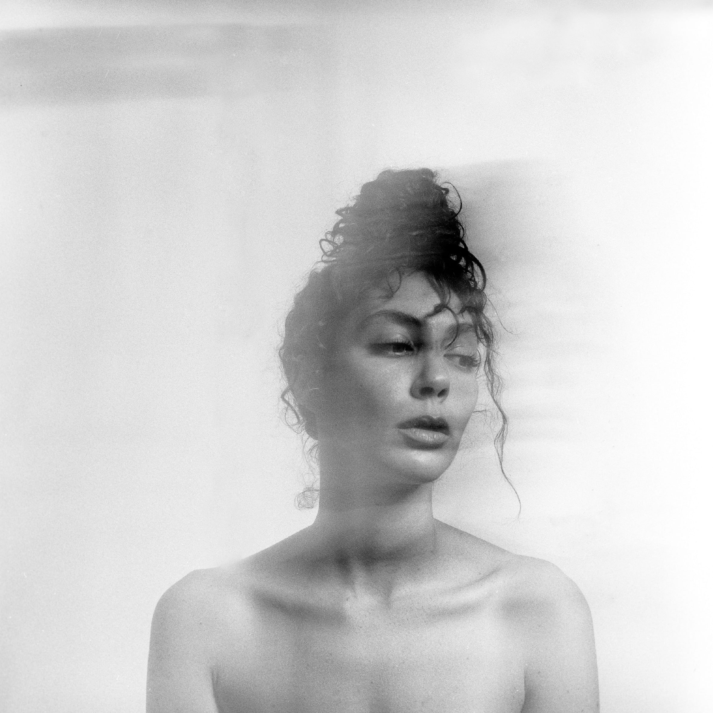
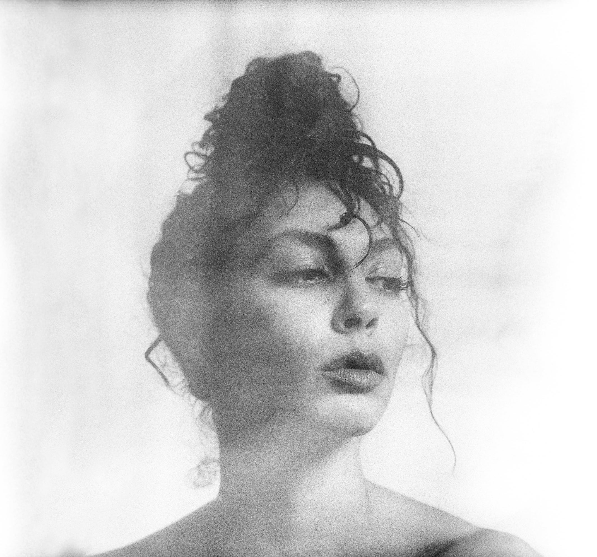

Creative Direction & Photography: Mena Assad
Sitters in Respective Order:
Nancy Assad
Naila Merai
Ahmad Hammoud
Camila Correa
Tamima Zaki
Sara El Adl
May Wahid
In philosophy, temporality is used to refer to the linear progression
of past, present, and future. In a sense, we are always aware of time,
particularly the history and context of things.
Tabula Rasa, “white board”, is a portrait series that encourages the
viewer to approach the sitter released from temporality. Beyond
context, beyond memory, beyond recognition, can one see hope, sadness,
triumph and exhaustion? The trajectory of the past, present, and
future? Can one remember another’s essence by simply gazing at them?